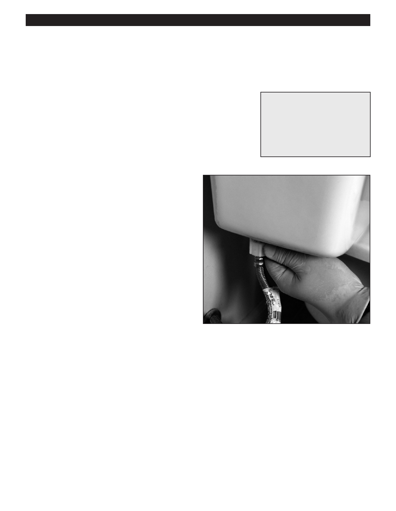

PA RT I C I PA N T R E S O U R C E G U I D E
Fixing a Leaky Toilet
Two common causes of a leaking toilet are loose connections and a poor wax seal at the
toilet base. Here’s how to fix both problems.
Safety
Tools and Materials Needed
Wear eye, mouth, and hand protection when replacing a wax seal.
Adjustable wrench
Sponge
Putty knife
Old rags or towels
Replacement wax ring
How-to Steps:
Tightening Toilet Tank Connections
Gently tighten tank nuts.
Gently tighten the fill valve nut
Gently tighten the supply tube nut.
Caution: Over-tightening may break the toilet.
Notes:
66